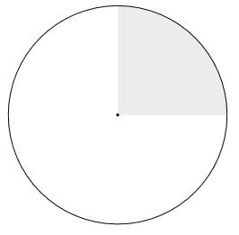
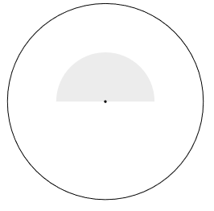
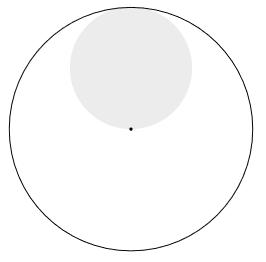

Chapter 4 - Conditional Probability
4.2 Continuous Conditional Probability
Results
Conditional Probability
If X is a continuous random variable
with density function f(x), and if E is an event with positive probability, we define
a conditional density function by the formula
$$
f(x|E) =
\left\{
\begin{matrix}
f(x)/P(E) & x\in E, \\
0 & x\not\in E.
\end{matrix}
\right.
$$
Then, for any event F, we have
$$
P(F|E) = \int_F f(x|E)dx.
$$
Alternative expression:
$$
P(F|E) = \int_F f(x|E)dx = \int_{E\cap F} \frac{f(x)}{P(E)} dx = \frac{P(E\cap F)}{P(E)}.
$$
Independent Events
Just as in the discrete case, independence is defined in the same way.
The events E and F are independent if,
$$
P(E|F) = P(E),
\qquad
P(E\cap F) = P(E)P(F).
$$
Definition 4.6
Let X
1, X
2, ..., X
n be continuous random variables associated with
an experiment, and let X = (X
1, X
2, ..., X
n). Then the joint cumulative
distribution function of X is defined by,
$$
F(x_1, x_2, \ldots, x_n) = P(X_1\leq x_1, X_2\leq x_2, \ldots, X_n\leq x_n).
$$
The joint density function of X satisfies the following equation:
$$
F(x_1, x_2, \ldots, x_n) =
\int_{-\infty}^{x_1}\int_{-\infty}^{x_2} \cdots\int_{-\infty}^{x_n}
f(t_1, t_2, \ldots, t_n)dt_n dt_{n-1}\ldots dt_1.
$$
Definition 4.7
Let X
1, X
2, ..., X
n be continuous random variables
with cumulative distribution functions F
1(x), F
2(x), ..., F
n(x).
Then these variables are
mutually independent if
$$
F(x_1, x_2, \ldots, x_n) = F_1(x_1)F_2(x_2)\cdots F_n(x_n)
$$
for any choice of x
i. Thus, if
X
1, X
2, ..., X
n
are mutually independent, then the joint cumulative distribution function of the random variable
X = (X
1, X
2, ..., X
n) is just the product of the individual
CDFs. When two variables are mutually independent, we just say that they are
independent.
Theorem 4.2
Let X
1, X
2, ..., X
n be continuous random variables
with PDFs f
1(x), f
2(x), ..., f
n(x).
Then these random variables are
mutually independent if and only if
$$
f(x_1, x_2, \ldots, x_n) = f_1(x_1)f_2(x_2)\cdots f_n(x_n)
$$
for any choice of x
i.
Theorem 4.3
Let X
1, X
2, ..., X
n be mutually independent random variables
and let φ
1(x), φ
2(x), ..., φ
n(x) be continuous functions.
Then φ
1(X
1), φ
2(X
2), ..., φ
1n(X
n)
are mutually independent.
Definition 4.8
A sequence X
1, X
2, ..., X
n of random variables X
i that
are mutually independent and have the same density is called an
independent trials process.
Exercise 1
Pick a point x at random (with uniform density) in the interval [0, 1]. Find
the probability that x > 1/2, given that
(a) x > 1/4.
(b) x < 3/4.
(c) |x − 1/2| < 1/4.
(d) x
2 − x + 2/9 < 0.
Answer
We are using the uniform distribution on [0, 1], so f(x) = 1. In the exercises we define the event x > 1/2 as F, and
the given event as E.
(a)
Here E = {x | x > 1/4}. We calculate the probability of E:
$$
P(E) = \int_E f(t)dt = \int_{1/4}^1 1 dt = \Big[t\Big]_{1/4}^1 = 1 - 1/4 = 3/4.
$$
So, since F ⊂ E;
$$
P(F|E) = \int_F f(t)/P(E) dt = \int_{1/2}^1 \frac{4}{3}dt = \Big[\frac{4t}{3}\Big]_{1/2}^1
= \frac{4}{3}\Big[t\Big]_{1/2}^1 = \frac{4}{3}[1 - 1/2] = \frac{4}{3}\cdot \frac{1}{2} = \frac{4}{6} = \frac{2}{3}.
$$
(We are scaling up the probability, since we are restricting the condition to a smaller area. Makes sense!)
(b)
E = {x | x < 3/4}. We calculate the probability of E:
$$
P(E) = \int_E f(t)dt = \int_{0}^{3/4} 1 dt = \Big[t\Big]_{0}^{3/4} = 3/4 - 0 = 3/4.
$$
In this case, F = {x | x > 1/2}, so E ∩ F = {x | x ∊ [1/2, 3/4]}.
$$
P(F|E) = \int_F f(t)/P(E) dt = \frac{4}{3}\int_{1/2}^{3/4} 1dt = \frac{4}{3}\Big[t\Big]_{1/2}^{3/4}
= \frac{4}{3}[3/4 - 2/4] = \frac{4}{3}\cdot \frac{1}{4} = \frac{1}{3}.
$$
(c)
Reformulating:
|x − 1/2| < 1/4 ==> −1/4 < x − 1/2 < 1/4 ==> 1/4 < x < 3/4. So in this case, E = {x | x ∊ [1/4, 3/4]}.
Calculating the probability of E:
$$
P(E) = \int_E f(t)dt = \int_{1/4}^{3/4} 1 dt = \Big[t\Big]_{1/4}^{3/4} = 3/4 - 1/4 = 1/2.
$$
F = {x | x > 1/2}, so E ∩ F = {x | x ∊ [2/4, 3/4]}.
$$
P(F|E) = \int_F f(t)/P(E) dt = 2\int_{2/4}^{3/4} 1dt = 2\Big[t\Big]_{2/4}^{3/4}
= 2[3/4 - 2/4] = 2\cdot \frac{1}{4} = \frac{1}{2}.
$$
(d)
Reformulating.
x
2 − x + 2/9 < 0 ==> (x - 1/3)(x - 2/3) < 0. Zero points when x=1/3 or x=2/3. When inserting x=0 or x=1
it is positive, but it is negative for values between 1/3 and 2/3.
Hence, E = {x | x ∊ [1/3, 2/3]}.
Calculating the probability of E:
$$
P(E) = \int_E f(t)dt = \int_{1/3}^{2/3} 1 dt = \Big[t\Big]_{1/3}^{2/3} = 2/3 - 1/3 = 1/3.
$$
F = {x | x > 1/2}, so E ∩ F = {x | x ∊ [1/2, 2/3]}, or E ∩ F = {x | x ∊ [3/6, 4/6]}.
$$
P(F|E) = \int_F f(t)/P(E) dt = 3\int_{3/6}^{4/6} 1dt = 3\Big[t\Big]_{3/6}^{4/6}
= 3[4/6 - 3/6] = 3\cdot \frac{1}{6} = \frac{1}{2}.
$$
■
Exercise 2
A radioactive material emits α-particles at a rate described by the density function
(and distribution function as shown in Example 4.20)
$$
f(t) = 0.1 e^{−0.1t} \;\;\Longrightarrow\;\; F(t) = 1 - e^{-0.1t}.
$$
Find the probability that a particle is emitted in the first 10 seconds, given
that
(a) no particle is emitted in the first second.
(b) no particle is emitted in the first 5 seconds.
(c) a particle is emitted in the first 3 seconds.
(d) a particle is emitted in the first 20 seconds.
Answer
Let E be the event that a particle is emitted within the first 10 seconds. G is the event specified in each question.
(a)
Finding the probability that a particle is emitted in the first second: F(1) = 1 - exp(-0.1) ≈ 0.09516.
The event G is that this does not happen, so P(G) = 1 - F(1) = 0.9048.
We must find the intersetion E ∩ G = {emitted within 10 seconds AND not emitted in first second}, so
this becomes the event that a particle is emitted between 1 and 10 seconds.
$$
P(E|G) = \frac{P(E\cap G)}{P(G)} = \frac{F(10) - F(1)}{0.9048} = \frac{0.5369}{0.9048} = 0.5934.
$$
By the memoryless property, we could also just calculate:
$$
F(9) = 1 - e^{-0.9} = 0.5934.
$$
(b)
Similar to (a). The probability there is a particle is emitted within the first five seconds: F(5) = 1 - exp(-0.5) ≈ 0.3934.
The event G is that this does not happen, so P(G) = 1 - F(5) = 0.6065.
E ∩ G = {emission between 5 and 10 seconds}, so P(E ∩ G) = F(10) - F(5).
$$
P(E|G) = \frac{P(E\cap G)}{P(G)} = \frac{F(10) - F(5)}{0.6065} = \frac{0.2386}{0.6065} = 0.3934.
$$
By the memoryless property, we could also just calculate:
$$
F(5) = 1 - e^{-0.5} = 0.3934.
$$
(c)
E ∩ G = {emitted within 10 seconds AND emitted within 3 seconds} = {emitted within 3 seconds} = G,
since G ⊂ E. In this case we get:
$$
P(E|G) = \frac{P(E\cap G)}{P(G)} = \frac{P(G)}{P(G)} = 1,
$$
which makes sense, since the event has already happened.
(d)
G: a particle is emitted within the first 20 seconds, so P(G) = F(20) = 1 - exp(-2) = 0.8646.
This time, since E ⊂ G, we get E ∩ G = E. Recalling that P(E) = F(10) = 1 - exp(-1) = 0.6321.
$$
P(E|G) = \frac{P(E\cap G)}{P(G)} = \frac{P(E)}{P(G)} = \frac{F(10)}{F(20)} = \frac{0.6321}{0.8646} = 0.7310.
$$
■
Exercise 3
The Acme Super light bulb is known to have a useful life described by the
density function
$$
f(t) = 0.01 e^{−0.01t} \;\;\Longrightarrow\;\; F(t) = 1 - e^{-0.01t}.
$$
where t is measured in hours.
(a) Find the
failure rate of this bulb (see Exercise 2.2.6).
(b) Find the
reliability of this bulb after 20 hours.
(c) Given that it lasts 20 hours, find the probability that the bulb lasts
another 20 hours.
(d) Find the probability that the bulb burns out in the forty-first hour, given
that it lasts 40 hours.
Answer
(a)
The failure rate is simply the λ parameter, which in this case is 0.01.
(b)
Following the methods in exercise 2.2.6, we get that the reliability after 20 hours is:
$$
P(t > T) = e^{-0.2} = 0.8187.
$$
(c)
Let F be the event that the bulb lasts more than 40 hours: F = {t > 40}, and let M be the event that
the bulb lasts more than 20 hours: M = {t > 20}. We want to find P(F|M). Note that since F is a subset of
M, we get: F ∩ M = {t > 40}∩{t > 20} = {t > 40} = F.
To find the probabilities:
P(F) = P(t > 40) = 1 - P(t ≤ 40) = 1 - F(40).
P(M) = P(t > 20) = 1 - P(t ≤ 20) = 1 - F(20).
Calculating the probability:
$$
P(F|M) = \frac{P(F\cap M)}{P(M)} = \frac{P(F)}{P(M)} = \frac{1 - F(40)}{1 - F(20)}
= \frac{0.67032}{0.8187} = 0.81873
$$
By the memoryless property, this could have been calculated as:
$$
1 - F(20) = 0.81873
$$
(d)
This is similar to (c). Call the events F and M again. M is the event that P(t > 40), and F is the event that
P(t ≤ 41).
Finding the probabilities:
P(F) = P(t ≤ 41) = F(41).
P(M) = P(t > 40) = 1 - P(t ≤ 40) = 1 - F(40).
Now, to find the intersection:
F ∩ M = {t ≤ 41}∩{t > 40} = {40 < t ≤ 41}. So, P(F ∩ M) = F(41) - F(40).
$$
P(F|M) = \frac{P(F\cap M)}{P(M)} = \frac{F(41) - F(40)}{1 - F(40)}
= \frac{0.006669796}{0.67032} = 0.009950167
$$
By the memoryless property, this could have een calculated as:
$$
F(1) = 0.009950166
$$
■
Exercise 4
Suppose you toss a dart at a circular target of radius 10 inches. Given that
the dart lands in the upper half of the target, find the probability that
(a) it lands in the right half of the target.
(b) its distance from the center is less than 5 inches.
(c) its distance from the center is greater than 5 inches.
(d) it lands within 5 inches of the point (0, 5).
Answer
In all that follows, we will define the event U as the dart landing in the upper half of the target.
U = {(x,y) | y ≥ 0}.
Calculating the probability, using a geometric argument. The area is half the dart area, specifically the top
half, so P(U) = 1/2.
(a)
The event E is the dart landing in the right hand side of the target. So, the area F ∩ M becomes the
top right quadrant of the map, and P(F ∩ M) = 1/4.
$$
P(E|U) = \frac{P(E\cap U)}{P(U)} = \frac{1/4}{1/2} = 1/2.
$$
Sketch of area.

(b)
The event E is the dart landing within 5 inches of the center, sp Area(E) = π(5)
2 = 25π,
and then the probability is P(E) = 25π/100π = 1/4. When finding E ∩ U it will be half this circle, so Area(E ∩ U) = (25/2)π,
and so P(E ∩ U) = (25π/2)/(100π) = 25/100 = 5/40 = 1/8.
$$
P(E|U) = \frac{P(E\cap U)}{P(U)} = \frac{1/8}{1/2} = 1/4.
$$
Sketch of area.

(c)
Now the area is at least 5 inches from the center, so this is the complement to the area in (b), so
Area(E) = 100π - 25π = 75π. Again, when restricting this to the upper half, this area is halfed, so
Area(E ∩ U) = 75π/2, and so P(E ∩ U) = (75π/2)/(100π) = 75/200 = 15/40 = 3/8.
$$
P(E|U) = \frac{P(E\cap U)}{P(U)} = \frac{3/8}{1/2} = 3/4.
$$
Sketch of area.
(d)
The region of E is the circle with center in (0, 5) and with radius 5. Area(E) = 25π. Since E ⊂ U,
Area(E ∩ U) = Area(E) = 25π. So P(E ∩ U) = P(E) = 25π/100π = 1/4.
$$
P(E|U) = \frac{P(E\cap U)}{P(U)} = \frac{1/4}{1/2} = 1/2.
$$
Sketch of area.

■
Exercise 5
Suppose you choose two numbers x and y, independently at random from
the interval [0, 1]. Given that their sum lies in the interval [0, 1], find the
probability that
(a) |x − y| < 1.
(b) xy < 1/2.
(c) max{x, y} < 1/2.
(d) x 2 + y 2 < 1/4.
(e) x > y.
Answer
■
Exercise 6
asd
Answer
■
Exercise 7
asd
Answer
■
Exercise 8
asd
Answer
■
Exercise 9
asd
Answer
■
Exercise 10
asd
Answer
■
Exercise 11
asd
Answer
■
Exercise 12
asd
Answer
■
Exercise 13-14
Skipped... Just some programming exercises